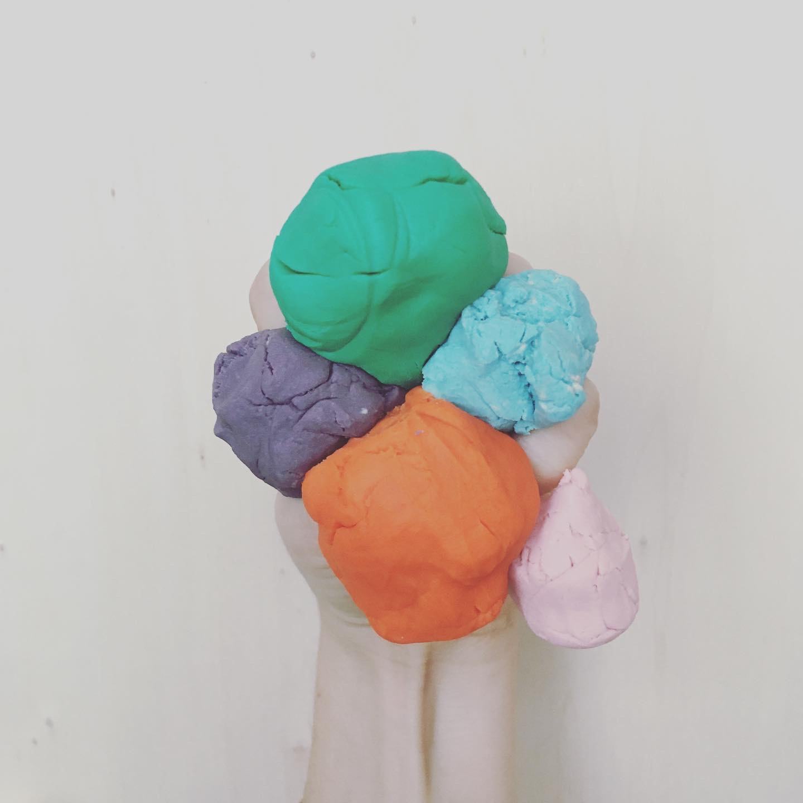
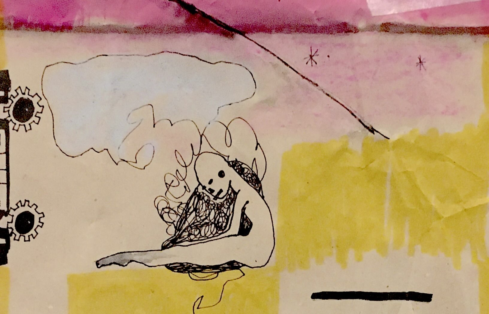
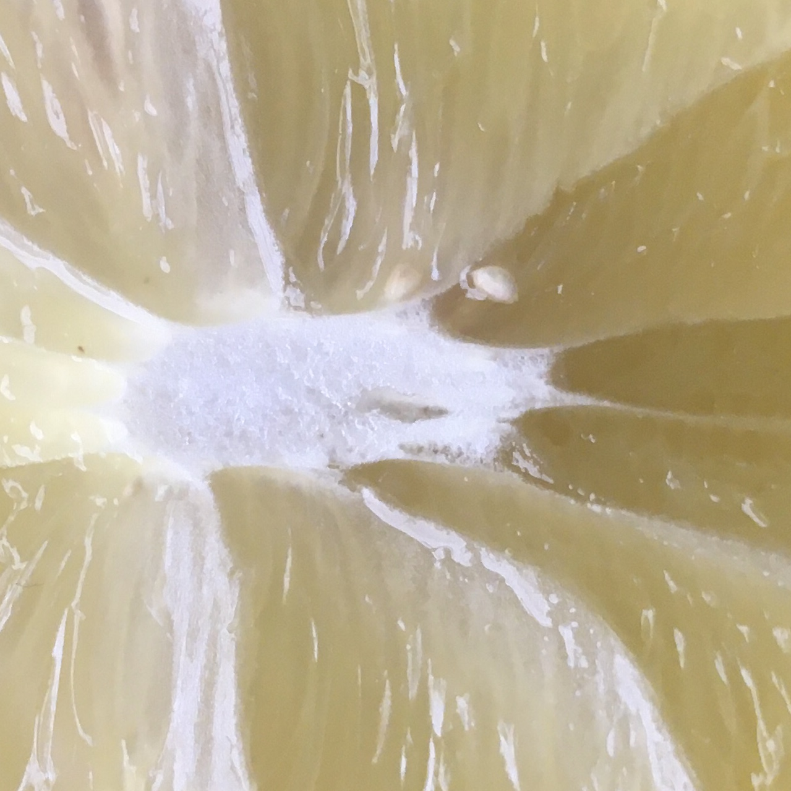
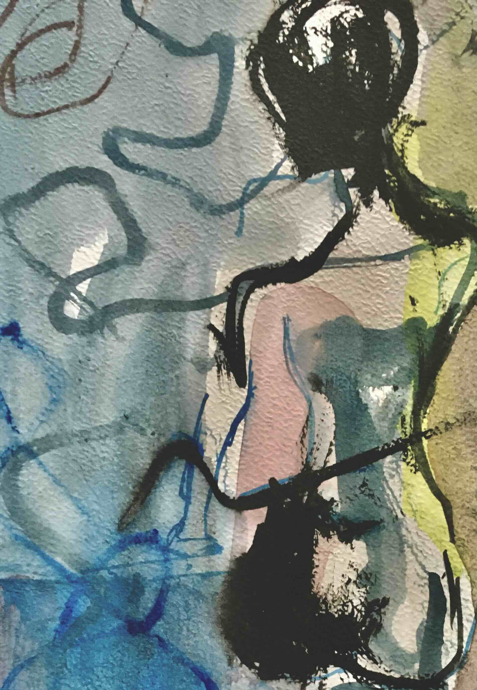
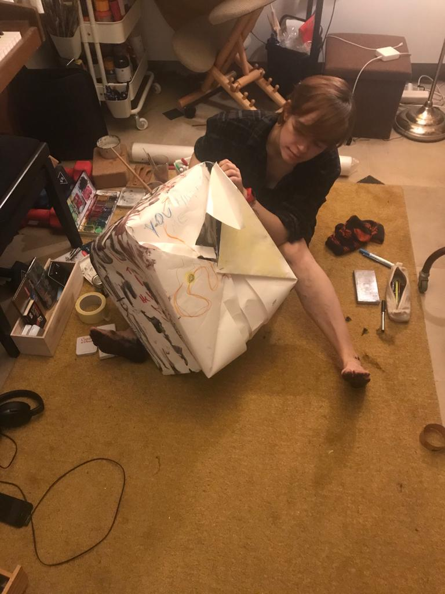

wieder in den Flow kommen möchtest
Du möchtest kreativ sein, schiebst es aber immer wieder auf, zerdenkst alles oder findest keinen Anfang.
Online-Kreativitätscoaching im Einzelgespräch für Kunstschaffende, Schreibende und alle, die gern gestalten und freier kreativ sein möchten – mit Reflexion, Körperwahrnehmung und Kunst.
Keine Vorkenntnisse in bildender Kunst nötig.
Kostenloses 30-minütiges Gespräch
Ein erstes Gespräch von 30 Minuten, in dem wir darüber sprechen, was dich hierherführt und ob eine Zusammenarbeit hilfreich sein könnte.Ein erstes Gespräch von 30 Minuten, in dem wir darüber sprechen, was dich hierherführt und ob eine Zusammenarbeit hilfreich sein könnte.

Du möchtest kreativ sein, schiebst es aber immer wieder auf, zerdenkst alles oder findest keinen Anfang.

Du hast Ideen, weißt aber noch nicht, in welche Richtung es gehen soll oder womit du dich wirklich beschäftigen möchtest.

Du möchtest dich von Vergleichen, Selbstkritik und den Erwartungen anderer lösen und deiner eigenen kreativen Stimme vertrauen.

Du vermisst es, einfach auszuprobieren, deiner Neugier zu folgen und kreativ zu sein, ohne ein bestimmtes Ergebnis erreichen zu müssen.
In einer Sitzung können wir einfache Formen, Farben oder Schreibimpulse nutzen – neben dem Gespräch und dem achtsamen Hineinspüren in den Körper.
Durch Kunst können wir erkunden, was uns beim kreativen Arbeiten im Weg steht, unsere Neugier wiederentdecken und neue Richtungen für unser Schaffen finden.
Es geht nicht darum, was du machst, sondern darum, was du dabei entdeckst.
Helene hat im Coaching sehr gute Fragen gestellt, durch die ich mich immer intensiver mit meinem Thema auseinandergesetzt habe. Ich habe mich wohl, gehört und unterstützt gefühlt. Die Sitzung hat mich motiviert, über mich hinauszuwachsen.
Anja, Spanien
Besonders geschätzt habe ich, wie natürlich sich das Gespräch entwickelt hat. Ich habe kaum bemerkt, dass Helene es geleitet hat. Es war eine Einladung, innezuhalten, in mich hineinzuhören und tiefer hinzuschauen, ohne mich dabei überfordert zu fühlen.
Antonia, Australien

Kreatives Arbeiten begleitet mich schon lange und ist ein wichtiger Teil davon, wie ich das Leben verstehe und genieße. Ich habe ein Jahr an der Gerrit Rietveld Academie in Amsterdam Kunst studiert. Mein Ansatz ist inspiriert von Pat B. Allens Art Is a Way of Knowing und Eric Maisels Coaching the Artist Within.
Mein Hintergrund verbindet Kunst, Yoga und Ingenieurwesen mit Ausbildungen in Ernährungs-, Gesundheits- und ganzheitlichem Wellness-Coaching. Mich interessieren sowohl Struktur als auch Intuition: die praktischen Schritte, die uns weiterbringen, und die leiseren Formen des Erkennens, die durch Kreativität, den Körper und Reflexion entstehen.
Ich glaube nicht, dass es nur einen festen oder „richtigen“ Weg gibt, kreativ zu sein. Mich interessiert, was jedem Menschen persönlich wichtig ist, was dabei im Weg steht und wie sich eine eigene kreative Richtung finden lässt.
Mein Ansatz verbindet eigene künstlerische Praxis, künstlerisches Erforschen, ganzheitliches Coaching und Körperwahrnehmung. Mich interessiert der kreative Prozess selbst – und was uns hilft, mit seinen Herausforderungen umzugehen.


Meine künstlerische Erfahrung umfasst Malerei, Fotografie, Installation und Performance. Ich habe ein Jahr an der Gerrit Rietveld Academie in Amsterdam studiert, optisch-mechanische Lichtinstallationen mitentwickelt und ausgestellt. Außerdem wurden Fotografien von mir im Rahmen eines Wettbewerbs für eine Ausstellung in einem Museum ausgewählt.
Ich habe auch als Tänzerin an einer zeitgenössischen Kunstproduktion mitgewirkt und zwei Kleingruppentreffen mit Meditation und Reflexion angeleitet, eines davon mit dem Schwerpunkt intuitives künstlerisches Gestalten.
Mich inspirieren auch Pat B. Allens Art Is a Way of Knowing, Eric Maisels Coaching the Artist Withinund Rick Rubins The Creative Act: A Way of Being. Ihre Perspektiven auf Intuition, Sinn, kreative Freiheit und den Prozess des Gestaltens finden in meiner eigenen künstlerischen Praxis Widerhall.
Weitere Impulse geben mir Eugene Gendlin, Journal to the Self, The Artist Within und The Art of Somatic Coaching. Sie eröffnen Zugänge zum Erkennen über den Körper, das Schreiben, die Aufmerksamkeit und das innere Zuhören.
Auch die Gedanken von J. Krishnamurti, Alan Watts, Ram Dass und Michael A. Singer über Bewusstsein, Präsenz und Freiheit inspirieren mich.
Ich biete Kreativitätscoaching online in 60-minütigen Einzelgesprächen an. Bevor wir uns für eine Zusammenarbeit entscheiden, lernen wir uns in einem kostenlosen Gespräch von 30 Minuten kennen.
Wir sprechen darüber, wo du in deinem kreativen Leben gerade stehst und was dich hierherführt. Eine klare Frage musst du noch nicht mitbringen.
Wir schauen gemeinsam, wo es gerade hakt, was dich begeistert und was du weiter erkunden möchtest.
Wir sprechen darüber, ob sich eine Zusammenarbeit stimmig anfühlt. Du entscheidest, ob du weitermachen möchtest. Ich sage dir ehrlich, ob ich die richtige Person bin, um dich zu unterstützen.
Die Coaching-Sitzungen dauern jeweils 60 Minuten und finden online statt.
Coaching ist ein gemeinsamer Prozess, der zum Nachdenken anregt. Du bestimmst, worum es in einer Sitzung geht. Ich unterstütze dich dabei, herauszufinden, worauf du hinarbeiten möchtest – mit Aufmerksamkeit, Reflexion, ehrlichem Feedback und Vertrauen in deine Fähigkeiten. Dabei respektiere ich, dass du deine eigenen Entscheidungen triffst.
Coaching lebt davon, dass du etwas einbringst, das dich wirklich beschäftigt, neugierig bleibst und bereit bist, ehrlich hinzuschauen. Du musst noch nicht alles geklärt haben. Dein Beitrag ist, dich offen einzulassen, wahrzunehmen, was sich stimmig oder hilfreich anfühlt, und zwischen den Sitzungen kleine Schritte oder Reflexionsimpulse auszuprobieren, wenn sie dich unterstützen.
Die Verantwortung für deine Entscheidungen, dein Wohlbefinden und dein Tempo bleibt bei dir. Ich begleite dich mit Aufmerksamkeit, Fragen, Reflexion, ehrlichem Feedback und – wo es passt – praktischen Anregungen. Dabei soll die Richtung, die wir gemeinsam finden, zu dir passen.
Coaching ist keine Therapie. Es dient weder der Diagnose noch der Vorbeugung, Heilung oder Behandlung psychischer oder körperlicher Erkrankungen. Es ersetzt keine medizinische, psychologische, rechtliche oder sonstige qualifizierte Beratung. Ich erstelle keine Ernährungspläne, Kalorienvorgaben, Abnehmprogramme oder therapeutischen Diäten und verordne keine Nahrungsergänzungsmittel. Wenn es sinnvoll ist, empfehle ich dir, eine entsprechende Fachperson hinzuzuziehen. Falls du bereits professionell begleitet wirst, ist es ratsam, diese Person über unser Coaching zu informieren.
Unsere Gespräche und meine Aufzeichnungen bleiben vertraulich und werden sicher aufbewahrt. Deine persönlichen Angaben oder deinen Namen gebe ich nur mit deiner Zustimmung weiter. Mit deiner Erlaubnis können dein Name und deine Kontaktdaten in einer Übersicht meiner Coachings festgehalten werden. Gesprächsinhalte werden dort nicht vermerkt.
Ja. Du musst noch kein klares Ziel haben. Wir können bei dem anfangen, was sich unklar oder schwer anfühlt, sich wiederholt oder irgendwie nicht stimmt – und behutsam herausfinden, was deine Aufmerksamkeit braucht.